乗りすけさん
2013年02月26日 (火)【乗りすけFile】 No.63：犬ぞり（2月26日放送）
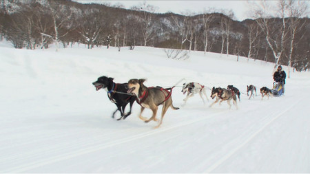


全長：2m60cm
全高：95cm
全幅：50cm
重量：10kg
価格：20～30万円
北極圏やアラスカなど、寒冷な土地帯で人や物を運搬する手段として使用されてきた、犬が牽引するソリ。日本でも冬のドッグスポーツとして人気で、各地でレースが開催されている。ソリを引く犬は耐寒性と持久力に優れた中型のハスキー犬が主流。１頭から２０頭以上まで、状況に応じて頭数を変更する。知恵と勇気を兼ね備えたリーダー犬を先頭に、力持ちの犬はソリの最も近くに配置される。７頭引きの場合、最大積載量は100kg以上、最高時速は約40kmに及ぶ。
ソリはカーボン製で重量約10kg。前部には、ケガをしたり疲労した犬を乗せて運ぶドッグバッグが搭載されている。
これまでの【乗りすけFile】はこちら
投稿者:大天才テレビジョン社員１号 | 投稿時間:18時44分 | 固定リンク


 " title="ソーシャルブックマークについて">
" title="ソーシャルブックマークについて">
※NHKサイトを離れます。
2013年02月25日 (月)【乗りすけFile】 No.62：スノーボード（2月25日放送）

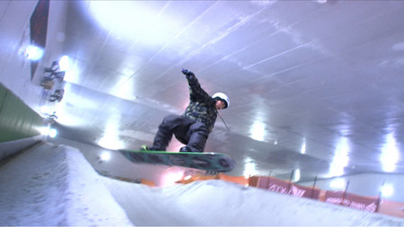
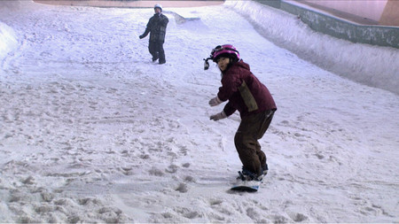
全長：1m54cm
全高：約10cm
全幅：29cm
重量：約４kg
定員：1名
価格：9万8700円
上に乗って雪上を滑るためウインタースポーツに用いるボード。上級者はジャンプや回転技など多彩なトリックを楽しむことができる。
専用ボードは厚さ約１㎝、バインディングでブーツごと足を固定し、斜面を滑走する。ボードのエッジはわずかに弧を描いており、エッジを雪面に押し当てることで左右に旋回(ターン)することができる。速度の調整もターンによって行う。エッジは鉄製で固い雪面にも対応。
ボード本体は木製で重量は約４kg。耐久性向上のため表面をグラスファイバーでコーティング。裏面は摩擦が少なく水はけの良いポリエチレン性となっている。
これまでの【乗りすけFile】はこちら
投稿者:大天才テレビジョン社員１号 | 投稿時間:18時49分 | 固定リンク
" title="ソーシャルブックマークについて">
※NHKサイトを離れます。
2013年02月20日 (水)【乗りすけFile】 No.61:圧雪車（2月20日放送）
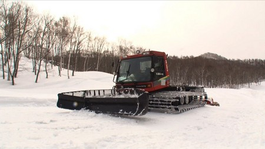

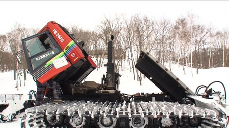
全長：8m49cm
全高：2m79cm
全幅：4m90cm
重量：5300kg
定員：2名
価格：約3500万円
スキー場のゲレンデ整備を行う大型の雪上車。新雪を踏み固めてコースを快適に保つ。
上下左右に振動する「排土板」で雪面を平らに削った後、後部の「スノーミル」でさらに細かく砕き、ゴム製のフィニッシャーで押さえ込んで平らに仕上げる。圧力の強弱も調整が可能。
キャビンのすべての窓には、付着した雪やくもりを除去して視界を確保するために熱線が仕込まれている。さらに、車内からも暖房で暖めるため室内はたいへん暑い。
安全重視のために作業時はすべてのライトを点灯。回転灯や拡声器も用いて、周囲に注意喚起しながら走行する。約8000ccもの排気量を誇る大型のディーゼルエンジンをキャビン下に搭載。平均作業速度は約30km/h。
これまでの【乗りすけFile】はこちら
投稿者:大天才テレビジョン社員１号 | 投稿時間:18時42分 | 固定リンク
" title="ソーシャルブックマークについて">
※NHKサイトを離れます。
2013年02月19日 (火)【乗りすけFile】 No.60：スノーモービル（2月19日放送）

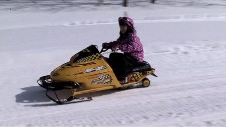

全長：2m85cm
全高：1m17cm
全幅：97cm
重量：167kg
定員：1～2名
価格：約70万円
積雪地帯で移動するための小型雪上車。オートバイに似た姿勢で乗車する。スキー場でのパトロールやモータースポーツなど、幅広く使用されている。
前部の２本のソリと後部中央のクローラによる３点で自立するため、オートバイよりも転倒しにくく、比較的容易に操縦が可能。車体の前後には振動を吸収するサスペンションを搭載している。排気量が100cc程度の小型のものから1000ccを越える大型のものまでさまざまな機種が存在する。番組で紹介したスノーモービルは中型で排気量300cc、最高速度約90km/h。左右のグリップとアクセルレバーには、手を暖めるための熱線が内蔵されている。
これまでの【乗りすけFile】はこちら
投稿者:大天才テレビジョン社員１号 | 投稿時間:18時44分 | 固定リンク
" title="ソーシャルブックマークについて">
※NHKサイトを離れます。
2013年02月13日 (水)【乗りすけFile】 No.59：競技用ボート（2月13日放送）
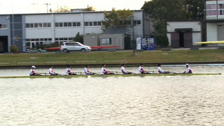
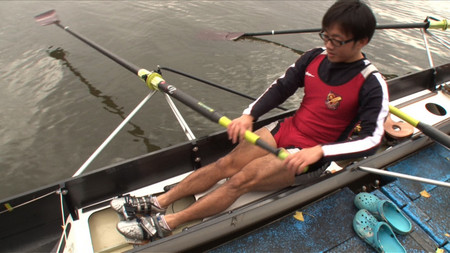

全長：13m
全高：45cm
全幅：50cm
重量：55kg
定員：5名
価格：約250万円
スピードを追究した人力のボート。１人用から８人用まで、漕ぐ人数ごとの種類がある。船体は安定性よりもスピードを重視した細長い構造となっている。ボディはカーボン製。
漕手（そうしゅ）は１人１本のオールを担当。前後にスライドするシートに後ろ向きに着席し、全身を使って漕ぐ。腕よりも太ももの筋肉を使うのがポイント。
乗船員の中で１人だけ前を向いている舵手（だしゅ）が、船尾の舵も操作しながら、漕手が息を合わせて漕げるように指示を出す。
ボート競技の花形であるエイト(８人漕ぎ)は、漕艇競技の最高速艇。最高速度は約22km/hにも達する。
これまでの【乗りすけFile】はこちら
投稿者:大天才テレビジョン社員１号 | 投稿時間:18時42分 | 固定リンク
" title="ソーシャルブックマークについて">
※NHKサイトを離れます。
2013年01月23日 (水)【乗りすけFile】 No.58：エコランカー（1月23日放送）


全長：3m06cm
全高：65cm
全幅：1m05cm
重量：約80kg
定員：1名
価格：約20万円
地球に優しい究極の低燃費マシン「エコランカー」。
決められた量の燃料で、どれだけ長い距離を走れるかを競う競技専用車両。一般的なガソリン普通自動車の数百倍もの燃費効率を誇る。
車体は極限まで軽量化が図られている。フレームは軽くて丈夫なアルミ製。空気抵抗軽減のため車高も極めて低い。
車輪は三輪。幅4cmの極細専用タイヤで、転がり抵抗を最大限に抑えている。また、接地面が減るため地面との摩擦抵抗も軽減される。
アクセルは右手、ブレーキは左手で操作。足は使わず全ての操作を手で行う。
市販の50ccバイクのエンジンを使用しているが、軽量化と空気抵抗の軽減の結果、最高速度は約90km/hにも達する。
これまでの【乗りすけFile】はこちら
投稿者:大天才テレビジョン社員１号 | 投稿時間:18時42分 | 固定リンク
" title="ソーシャルブックマークについて">
※NHKサイトを離れます。
2013年01月16日 (水)【乗りすけFile】 No.57：にんじん収穫機（1月16日放送）


全長：3m26cm
全高：1m56cm
全幅：1m64cm
重量：973kg
定員：2名
価格：約300万円
にんじんの収穫専用に作られた農業機械。操縦者に加えて後部座席に選別を行う補助人員が乗車する。
車体左側に引き抜き装置を装備。装置の先端が細かく振動することで畑の土をほぐし、茎葉を巻き込みにんじんを一気に引き抜いていく。抜き取られたにんじんは搬送されながら根と茎葉をカット、泥やゴミも振り落とされて補助者の元にたどり着く。車体にはコンテナ11個(にんじん約1100本)まで搭載可能。
作業速度は約１km/hと低速だが、1時間で最大22000本もの人参を収穫する性能を誇る。
これまでの【乗りすけFile】はこちら
投稿者:大天才テレビジョン社員２号 | 投稿時間:18時43分 | 固定リンク
" title="ソーシャルブックマークについて">
※NHKサイトを離れます。
2013年01月09日 (水)【乗りすけFile】 No.56：人力車（1月9日放送）

全長：約2m30cm
全高：約2m30cm
全幅：約1m30cm
重量：約80kg
定員：2名
価格：約200万円
明治時代に交通手段として人気を博した人力駆動の二輪車。現代では主に観光地での遊覧目的で利用される。
引き手（車夫）が前方に長く伸びた梶棒（かじぼう）を両手で握って操作する。
最高時速は車夫の脚力にもよるが、15km/h程度。
直径105cmもある巨大な車輪は、スピードを維持しやすく長距離の移動に適している。雨風や日ざしを防ぐ幌も装備。
軽車両に分類され、公道を走行するため、座席にはシートベルト、車両後部には尾灯が追加装備されている。
座席の下には大きな板バネがついており、振動を軽減。快適な乗り心地を実現している。
これまでの【乗りすけFile】はこちら
投稿者:大天才テレビジョン社員３号 | 投稿時間:18時42分 | 固定リンク
" title="ソーシャルブックマークについて">
※NHKサイトを離れます。
2012年12月05日 (水)【乗りすけFile】 No.55：ポッカール（12月5日放送）
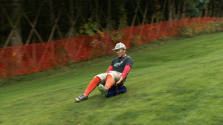

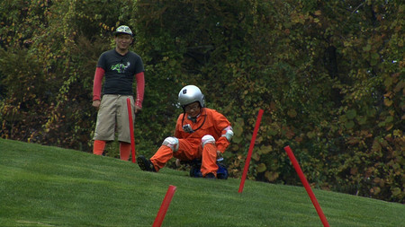
全長：56cm
全高：26cm
全幅：45cm
重量：3kg
定員：1名
価格：5万8000円
「登山の下山時も楽しみたい」という発想から2002年にドイツで開発された下り坂専用の乗り物。動力はないため平地や上り坂では走ることができない。登山で持ち運ぶことを想定し、総重量3kgと軽量に作られている。
悪路にも対応可能な丈夫なタイヤと、バイクにも使用される油圧式のブレーキを搭載。体重100kgまで乗車可能だ。
縦に並ぶ三輪の内、中央のタイヤだけワンサイズ大きくなっており、体重移動によってスムーズな旋回が行える。最高速度は70km/hにおよぶ。
スノーシーズンには、車輪部分を取り外してスキーアダプターを装着することで「スキーポッカール」としてゲレンデ滑走も可能となる。
これまでの【乗りすけFile】はこちら
投稿者:大天才テレビジョン社員１号 | 投稿時間:18時42分 | 固定リンク
" title="ソーシャルブックマークについて">
※NHKサイトを離れます。
2012年11月28日 (水)【乗りすけFile】 No.54：スイーパー（11月28日放送）
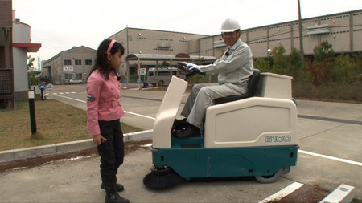


全長：1m52cm
全高：1m29cm
全幅：81cm
重量：460kg
工場や駅などの構内で使用される自走式産業用清掃機。ゴミの上を通過する際、車体中央下部のメインブラシがゴミを後部のタンクに掃き込む。タンク容量は80邃刀Aたまったごみの廃棄は手動で行う。
壁際など隅のゴミは、サイドブラシを使ってタンクに掃き込む。ブラシの届かないゴミは、本体に搭載された掃除機で吸い込むことが可能だ。
バッテリー駆動により静音走行を実現。８時間半の充電で３時間駆動する。最高速度は８km/h。
これまでの【乗りすけFile】はこちら
投稿者:大天才テレビジョン社員１号 | 投稿時間:18時42分 | 固定リンク
" title="ソーシャルブックマークについて">
※NHKサイトを離れます。
ページの一番上へ▲